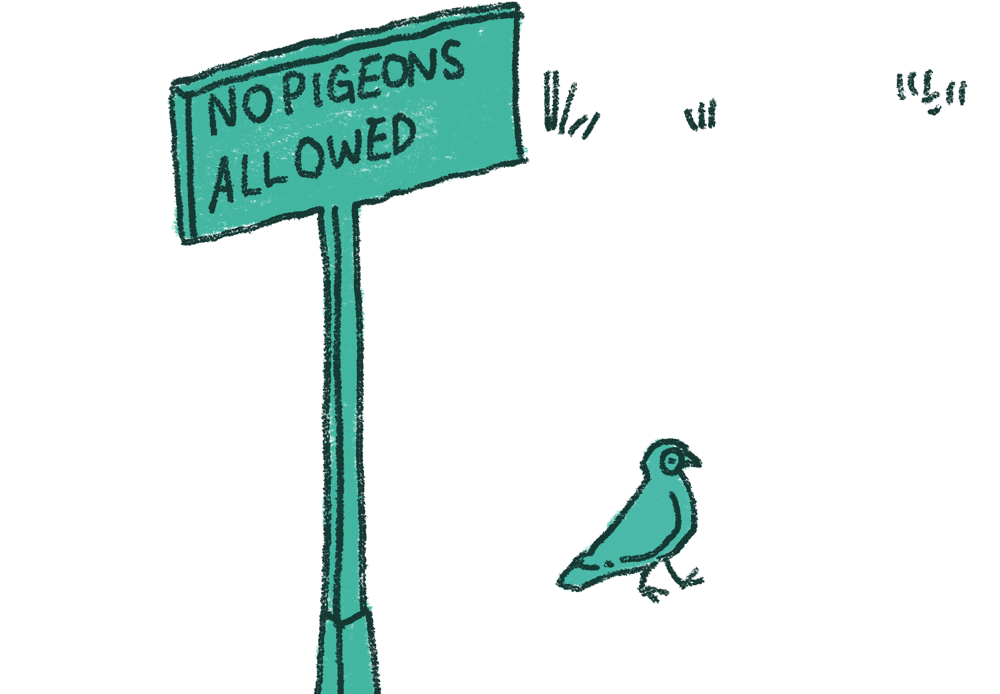
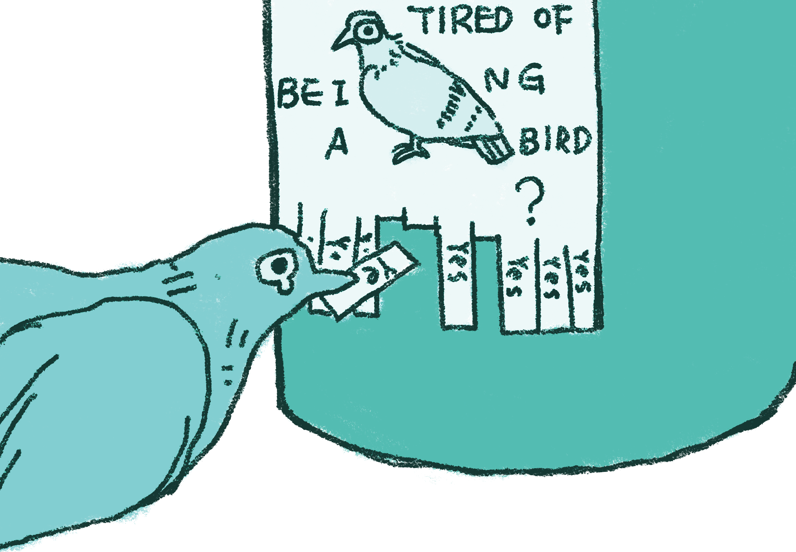
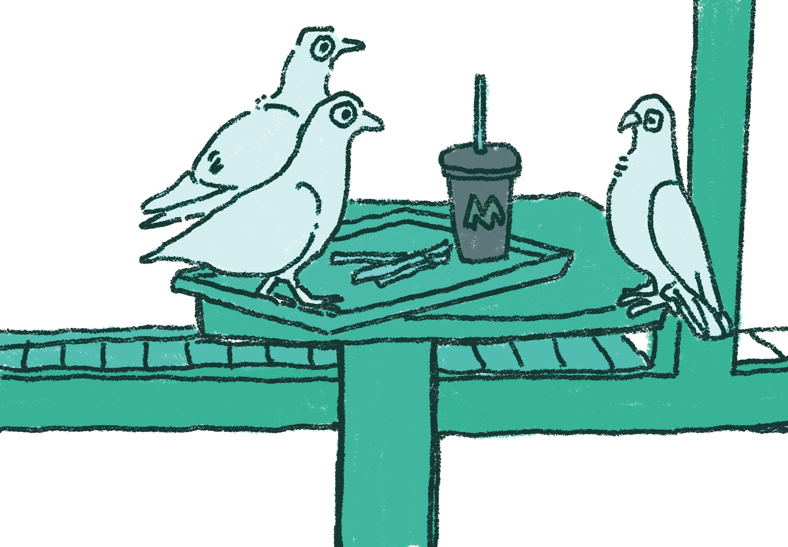

NYC pigeons are as iconic as yellow cabs. 🚖🐦
They thrive on dropped pizza crusts and bagels. 🍕🐦
Central Park pigeons are always in search of snacks. 🌳🐦
These pigeons dodge subway crowds like pros. 🚇🐦

Times Square pigeons are Broadway’s secret stars. 🎭🐦
Pigeons are regulars at the Statue of Liberty. 🗽🐦
NYC pigeons have their own aerial routes through buildings. 🏙️✈️
Rooftops are prime sunbathing spots for NYC pigeons. 🌞🐦

Pigeons are often featured in NYC street art. 🎨🐦
Occasionally, pigeons join subway rides, adding chaos. 🚇🐦
Pigeons love photobombing NYC skyline selfies. 🤳🐦
Many pigeons nest on NYC’s rooftops and ledges. 🏙️🐦

Pigeons glide effortlessly between NYC’s skyscrapers. 🌆✈️
Pigeons hang out in groups, sharing food and gossip. 🐦💬
Early riser pigeons forage before most humans wake up. 🌅🐦
NYC pigeons brave all weather, rain or shine. 🌧️🐦

NYC’s pigeons offer endless birdwatching opportunities. 👀🐦
Pigeons have established territories throughout New York City. 🏙️🐦
Pigeons perform aerial tricks while flying between buildings. 🎪🐦
Pigeons thrive in NYC’s hustle, making the best out of chaos. 🌆🐦
Their shimmering feathers make pigeons the city’s street style icons. 🌟🐦
Pigeons can zip through NYC streets at impressive speeds. 🚴♀️🐦
They love posing for pictures in Central Park. 📸🐦
Pigeons enjoy sitting on famous NYC statues. 🗽🐦